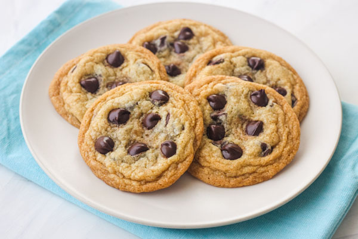

Cookies

source: Toaster Oven Love. Creator: Brie Norris
Description
They are cute for you!
They taste delicus for you!
They are easy to make for you!
Ingredients
- Brown sugar
- Butter
- Baking bowder
- Opt: chocolate chips
For a easy time!
- In a bowl but brown suger
- Melted butter
- baking bowder
- Mix them well
- add chocolate chips if want
- Make small balls
- but the balls on a oven plate
- in over and later done
- Boom, arent they just cute
Back to Odin Recipies